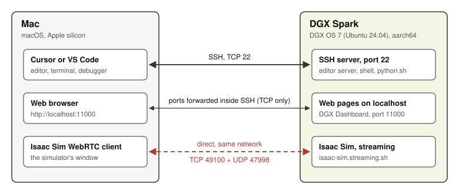

IsaacSim101#
Install NVIDIA Isaac Sim on a DGX Spark, and work on it from a Mac with Cursor or VS Code.
The DGX Spark sits on the network and does the computing. The Mac holds the editor. At the end of this session you can open a folder of the Spark in your editor, run an Isaac Sim script there, and see the simulator from the Mac.


Fig. 1 The three links of this session. The editor and the forwarded web pages travel inside one SSH connection. The picture of the simulator does not: it needs a direct path between the two machines.#
Note
This session was put together from the documentation of NVIDIA, Microsoft and Cursor as it stood on 23 November 2026, for the versions in the table below. It has not yet been run from start to finish on the lab’s DGX Spark. Where the documentation is silent, or two pages disagree, the text says so.
Versions#
Component |
Version |
|---|---|
Isaac Sim |
6.2.0, tag |
DGX Spark system software |
DGX OS 7.6.0 on Ubuntu 24.04, GPU driver 580.178.04, CUDA 13.0.3 |
NVIDIA Sync on the Mac |
0.148.0 |
VS Code, with Remote - SSH |
1.147, with 0.128.0 |
Cursor, with Remote - SSH by Anysphere |
3.31, with 1.1.19 |
Isaac Sim WebRTC Streaming Client |
2.0.0 |
Isaac Sim for Arm processors is supported on the DGX Spark only. Two of its features, cuRobo and cuMotion, are not supported there.
Before You Start#
You need:
A Mac with Apple silicon, on the same network as the Spark, with Cursor or VS Code installed.
A DGX Spark that has finished its first boot, with all updates installed from the DGX Dashboard.
The user name and password made in the setup wizard. Keep them safe: a lost password means reinstalling the system.
The name of the Spark. It looks like
spark-abcdand is printed on the Quick Start Guide.50 GB of free disk space on the Spark.
The two machines differ in ways that matter later.
Mac |
DGX Spark |
|
|---|---|---|
Role |
editor, browser, viewer |
build, simulation, training |
Processor |
Apple silicon, arm64 |
NVIDIA GB10: 20 Arm cores and a Blackwell GPU, aarch64 |
Memory |
its own |
128 GB or 64 GB, shared by CPU and GPU |
System |
macOS |
DGX OS 7, a version of Ubuntu 24.04 |
In this page a block labelled Mac runs in the Terminal of the Mac, and a block labelled Spark runs in a shell on the Spark. Replace spark-abcd with the name of your Spark and student with your user name on it.
Sharing one Spark
Give every student a separate account on the Spark. The steps with sudo in Part 3 change the whole machine and are done once, by whoever administers it. Each build from source needs at least 50 GB of free disk space. The streaming ports of Part 4 serve one viewer at a time.
Part 1: Reach the Spark from the Mac#
Find the Spark#
The Spark announces its name on the local network. Mac:
ping -c 3 spark-abcd.local
Three replies mean the name works. The first line also shows the IP address of the Spark in brackets. ping: cannot resolve spark-abcd.local: Unknown host means the network blocks this kind of name, which is common on campus networks. Use the IP address of the Spark instead, wherever this page writes spark-abcd.local. The router’s list of devices shows it, and so does a display attached to the Spark.
Log In Once with the Password#
Mac:
ssh student@spark-abcd.local
The first connection shows the fingerprint of the Spark. Type yes, then the password. You are now in a shell on the Spark. Spark:
hostname
dpkg --print-architecture
exit
The second command prints arm64. Software for the Spark must be built for this architecture, which Linux also calls aarch64.
Set Up a Key and a Short Name#
A key replaces the password, and a short name replaces the address. The editor needs both to work smoothly. Choose one of two ways.
NVIDIA Sync is NVIDIA’s helper app for the Mac. It installs a key on the Spark, names the connection, and starts the editor for you.
Install Cursor or VS Code first. Sync offers only the editors it finds on the Mac.
Download NVIDIA Sync for macOS from the connection playbook. Open
nvidia-sync.dmg, drag the app into Applications, and start it.Agree to the license. Tick the apps that Sync may start, such as Cursor and VS Code.
Select your Spark when Sync finds it, or choose Add a device manually. Either way a form opens. Type
sparkas the name, so that the connection is called as on the rest of this page. Fill in the host name or IP address, the port (usually 22), your user name and your password, then select Add. The password is used once, to install the key.If Sync asks Configure Docker Group?, choose Skip on a shared Spark. Membership of that group gives root-level control of the machine, and this session does not use Docker.
Select Get Started when Sync shows it. This starts the connection. Later, select the device in the Sync window and Connect.
Sync adds one Include line at the top of ~/.ssh/config on the Mac. It points to a file that Sync manages, with one entry for each device. From then on ssh followed by the device name works in any terminal, and the same name appears in the editor. Leave that line first in the file, and write your own entries below it.
Make a key for the Spark. Mac:
ssh-keygen -t ed25519 -f ~/.ssh/id_ed25519_spark
Copy its public half to the Spark. This asks for the password one last time. Mac:
ssh-copy-id -i ~/.ssh/id_ed25519_spark.pub student@spark-abcd.local
Name the connection. Open the file
~/.ssh/configon the Mac in the editor of the Terminal. Mac:nano ~/.ssh/configPaste this entry at the end of the file. Press Ctrl+O and then Return to save, and Ctrl+X to leave:
Host spark HostName spark-abcd.local User student IdentityFile ~/.ssh/id_ed25519_spark ServerAliveInterval 60 ServerAliveCountMax 3Test it. Mac:
ssh spark
The shell opens without asking for the password of the Spark. Type exit to return to the Mac.
The rest of this page calls the connection spark. With NVIDIA Sync it carries the name typed in the form. If you typed another name or left it empty, the list of Remote-SSH: Connect to Host… in Part 2 shows the name to use in place of spark. With an empty name it is normally the host name, such as spark-abcd.local.
Away from the lab
All of this needs the Mac and the Spark on one network. NVIDIA Sync can also connect across networks through Tailscale: see the Tailscale tab of the connection playbook. Set it up while you still have direct access.
Check the Spark#
Open a shell on the Spark. Mac:
ssh spark
Spark:
nvidia-smi
df -h ~
exit
exit returns the Terminal to the Mac. The prompt tells where you are: on the Spark it starts with your user name and the name of the Spark, as in student@spark-abcd.
nvidia-smi must show a driver version that starts with 580. Isaac Sim 6.2.0 was tested by NVIDIA with driver 580.159.03, and the Spark receives its drivers of that series through its own updates. Do not install a driver by any other route. The line Memory-Usage: Not Supported is expected: CPU and GPU share one memory, so use free -h to see it. df -h ~ shows the free disk space.
Updates are installed from the DGX Dashboard, under Settings. An update needs an account with sudo and restarts the Spark, which ends every session and job on it. On a shared Spark leave it to the administrator. Part 2 shows how to open the dashboard from the Mac.
Part 2: Connect the Editor#
The editor stays on the Mac. On the first connection it installs a small server program in your home directory on the Spark. After that, the files, the terminal and the debugger of the editor all work on the Spark.
Open the Extensions view and install Remote - SSH by Microsoft. Its identifier is
ms-vscode-remote.remote-ssh.Press Cmd+Shift+P and run Remote-SSH: Connect to Host…. Choose
spark. If VS Code asks for the type of the remote machine, choose Linux.Wait while VS Code installs its server on the Spark, in
~/.vscode-server. The left corner of the Status bar then showsSSH: spark.Open a folder of the Spark with File > Open Folder…, and a shell on the Spark with Terminal > New Terminal.
Extensions for a language run on the Spark, so they must be installed there too. In the Extensions view, press Install in SSH: spark on Python, Pylance, Python Debugger and Jupyter.
Work in the classic editor window. If Cursor shows its Agents window, press Cmd+Shift+P and run Open IDE.
Open the Extensions view, search for
@id:anysphere.remote-ssh, and install Remote - SSH by Anysphere. Microsoft’s extension of the same name is not supported in Cursor. Remove it if it came along with imported VS Code settings.Press Cmd+Shift+P and run Remote-SSH: Connect to Host…. Choose
spark. If Cursor asks, the platform is linux and the architecture is arm64.Wait while Cursor installs its server on the Spark, in
~/.cursor-server.Open a folder of the Spark with File > Open Folder, and a shell on the Spark with Terminal > New Terminal.
Extensions for a language run on the Spark, so they must be installed there too. With the remote window open, install Python (ms-python.python), Python Debugger (ms-python.debugpy) and Jupyter (ms-toolsai.jupyter). Pylance does not exist for Cursor. Its place is taken by Python by Anysphere (anysphere.cursorpyright).
Connect to the device in NVIDIA Sync, then click the icon of VS Code or Cursor. The editor opens with the connection to the Spark already made. Sync installs the Remote - SSH extension of Cursor when it is missing.
The extensions for Python are still yours to install, as described in the other two tabs.
Confirm where the terminal of the editor runs. Spark:
hostnamectl
whoami
The output names the Spark and your user on it.
Warning
If the Terminal of the Mac reaches the Spark but the editor reports No route to host, macOS is keeping the editor off the local network. Open System Settings > Privacy & Security > Local Network and switch on the editor, and NVIDIA Sync if you use it. Cursor has been reported not to appear in that list. The workaround given by Cursor’s staff is to start it from a Terminal that already has access. Quit Cursor first (Cmd+Q), because a second start only hands over to the copy that is already running. Then run:
/Applications/Cursor.app/Contents/MacOS/Cursor &
Open a Web Page of the Spark#
Some programs on the Spark show their results as a web page that only the Spark itself can open. The DGX Dashboard is one: it listens on port 11000 of the Spark. The editor can carry such a port to the Mac.
In the remote window, open the Ports view, choose Forward a Port, and enter 11000. Then open http://localhost:11000 in the browser of the Mac and log in with your account on the Spark. The dashboard shows the load of the GPU and the memory, and installs updates.
NVIDIA Sync has a DGX Dashboard button that does the same. So does one command. Mac:
ssh -L 11000:localhost:11000 spark
Forwarding carries TCP connections only. This matters in Part 4.
Keep Long Jobs Alive#
A command started in the terminal of the editor may stop when the connection drops. A build or a training run is better started inside tmux, which keeps a shell alive on the Spark. Spark:
tmux new -s isaac
Run the long command there. Press Ctrl+B and then D to leave the session running, and return to it later with tmux attach -t isaac. If tmux is not found, install it with sudo apt install tmux.
Part 3: Install Isaac Sim on the Spark#
Choose a Route#
Isaac Sim 6.2.0 reaches the Spark by four routes.
Route |
What you do |
Remarks |
|---|---|---|
Build from source |
clone tag |
the route of NVIDIA’s playbook for the DGX Spark, used below |
Prebuilt package |
unpack one 10 GB archive into |
no compiler; see the box at the end of this part |
Python package |
|
for projects that start from Python |
Container |
run |
Docker is already on the Spark |
This session follows the playbook Set Up Isaac Sim and Isaac Lab. It is NVIDIA’s step-by-step guide for the DGX Spark, and it names the build from source as the default there. The documentation of Isaac Lab says the opposite: build Isaac Sim from source only when you need to change it. The box at the end of this part gives the shorter route. Use one route per account: the routes share caches in your home directory, and mixing them causes trouble.
Run every step below in a shell on the Spark, with no Python environment active. If the prompt starts with (base) or another name in brackets, run conda deactivate or deactivate first.
Step 1: Compiler and Tools#
Warning
This step needs sudo and makes GCC 11 the default compiler for every user of the Spark. No NVIDIA page describes how to undo this. On a shared Spark the administrator does it once. Check first with gcc --version, g++ --version and git lfs version: if the first two read 11 and the third prints a version, go to Step 2.
Isaac Sim builds with GCC 11 only, and the system ships a newer one. The README of Isaac Sim also asks for two sets of packages that the playbook leaves out. Install those first. Spark:
sudo apt update
sudo apt-get install build-essential
sudo apt-get install -y libx11-dev xorg-dev
Then install GCC 11, make it the default, and check. Spark:
sudo apt update && sudo apt install -y gcc-11 g++-11
sudo update-alternatives --install /usr/bin/gcc gcc /usr/bin/gcc-11 200
sudo update-alternatives --install /usr/bin/g++ g++ /usr/bin/g++-11 200
sudo apt install git-lfs
gcc --version
g++ --version
Both versions must read 11.
Step 2: Source#
Spark:
cd ~
git clone --depth=1 --recursive --branch=v6.2.0 https://github.com/isaac-sim/IsaacSim
cd IsaacSim
git lfs install
git lfs pull
git describe --tags
The last command prints v6.2.0. Keep the --branch=v6.2.0 part: without it you get a different version, because the other branches of the repository hold older or unfinished code.
Step 3: Build#
Spark:
./build.sh
The first run prints a link to the license terms and asks Do you accept the governing terms? (yes/No):. Open the link on the Mac, read the terms, and answer yes. The build downloads its parts and compiles for ten minutes or more. It ends with a line such as:
BUILD (RELEASE) SUCCEEDED (Took 674.39 seconds)
Step 4: Environment#
Three variables tell the shell where Isaac Sim is. Run them inside ~/IsaacSim. Spark:
export ISAACSIM_PATH="${PWD}/_build/linux-aarch64/release"
export ISAACSIM_PYTHON_EXE="${ISAACSIM_PATH}/python.sh"
export LD_PRELOAD="$LD_PRELOAD:/lib/aarch64-linux-gnu/libgomp.so.1"
ISAACSIM_PATH is the built simulator. python.sh is the Python of Isaac Sim: use it in place of python for every Isaac Sim script. The third line loads a system library early. The playbook asks for it before Isaac Sim starts on this architecture.
The variables last for the current terminal only. To get them back in a new terminal, save these lines with the editor as ~/isaacsim-env.sh:
export ISAACSIM_PATH="$HOME/IsaacSim/_build/linux-aarch64/release"
export ISAACSIM_PYTHON_EXE="${ISAACSIM_PATH}/python.sh"
export LD_PRELOAD="$LD_PRELOAD:/lib/aarch64-linux-gnu/libgomp.so.1"
Then start each new terminal with source ~/isaacsim-env.sh.
Step 5: First Run#
Spark:
${ISAACSIM_PYTHON_EXE} -c "print('Isaac Sim configuration is now complete.')"
cd "${ISAACSIM_PATH}"
./python.sh standalone_examples/api/isaacsim.simulation_app/hello_world.py
The first command prints its sentence and shows that the Python of Isaac Sim starts. The second starts the simulator without a window, runs 100 frames, prints Hello World! and exits. The first start takes several minutes, while Isaac Sim caches its extensions and shaders. Later starts take well under a minute.
The simulator with its window starts with:
${ISAACSIM_PATH}/isaac-sim.sh
This opens the window on a display attached to the Spark. Over SSH nothing appears on the Mac. Part 4 covers that.
The prebuilt package instead of a build
Isaac Sim’s own documentation gives a shorter route for this architecture, with no compiler: download isaac-sim-standalone-6.2.0-linux-aarch64.zip from the download page and unpack it. The archive is about 10 GB. Keep 50 GB free, because the archive and the unpacked files need about 40 GB together for a while.
The commands below follow Quick Install, with two changes for work over SSH. Quick Install expects the archive in ~/Downloads on the Spark. Here wget fetches it there. That line and the md5sum line are not on NVIDIA’s page. The address is the one behind Linux (aarch64) on the download page, and md5sum must print the value shown there, 535e23a85a36f6e159e3d92cc7d957b3. Quick Install ends with ./isaac-sim.sh, which opens a window. That line is left out here. Spark:
mkdir -p ~/Downloads
cd ~/Downloads
wget https://downloads.isaacsim.nvidia.com/isaac-sim-standalone-6.2.0-linux-aarch64.zip
md5sum isaac-sim-standalone-6.2.0-linux-aarch64.zip
mkdir ~/isaacsim
unzip "isaac-sim-standalone-6.2.0-linux-aarch64.zip" -d ~/isaacsim
cd ~/isaacsim
./post_install.sh
If unzip is not found, install it with sudo apt install unzip.
With this route, skip Steps 1 to 3. Isaac Sim lives in ~/isaacsim, so that folder takes the place of ~/IsaacSim/_build/linux-aarch64/release everywhere on this page. Steps 4 and 5 are still needed, with one change in Step 4: skip its first block, save ~/isaacsim-env.sh with export ISAACSIM_PATH="$HOME/isaacsim" as its first line, and run source ~/isaacsim-env.sh.
The playbook for the Spark does not cover this route. Whether it needs the third variable of Step 4 is not documented.
Part 4: Use Isaac Sim from the Mac#
There are three ways to work with a simulator that runs on another machine.
Way |
Needs |
Standing |
|---|---|---|
Scripts without a window, results as files |
the SSH connection only |
works wherever SSH works |
Livestream to a viewer on the Mac |
both machines on one network, with TCP 49100 and UDP 47998 open between them |
documented for Isaac Sim on the Spark; test it on your unit |
Display on the Spark |
a monitor, keyboard and mouse on the Spark |
the way the playbook runs it |
Scripts without a Window#
Most work with Isaac Sim is a Python script that starts the simulator itself. With the editor, save these lines on the Spark as ~/hello_isaac.py:
from isaacsim import SimulationApp
simulation_app = SimulationApp({"headless": True})
simulation_app.update() # Render a single frame
simulation_app.close() # Cleanup application
"headless": True means no window. Every other import of Isaac Sim must come after the line that creates SimulationApp. Run the script. Spark:
${ISAACSIM_PYTHON_EXE} ~/hello_isaac.py
Scripts that render write their pictures to files, and the editor shows them: click an image in its file explorer.
Exercise
The folder standalone_examples/api/isaacsim.replicator.examples holds sdg_getting_started_01.py, which renders a small scene and writes images to a folder named _out_basic_writer. As shipped it starts with "headless": False. Copy it to your home directory, change that value to True, run the copy with python.sh, and open the images from the Mac.
Stream the Window to the Mac#
Isaac Sim can run without a display and send its window over the network. Spark:
cd "${ISAACSIM_PATH}"
./isaac-sim.streaming.sh
Wait for this line. On the first start it takes minutes.
Isaac Sim Full Streaming App is loaded.
On the Mac, download Isaac Sim WebRTC Streaming Client for macOS (aarch64) from the download page. Open the file and drag the app into Applications. Start it, replace the server 127.0.0.1 with the IP address of the Spark, and select Connect. If macOS asks whether the client may find devices on the local network, choose Allow, then select Connect again if the first attempt failed.
The address is the one in brackets in the first line of ping -c 3 spark-abcd.local on the Mac. On the Spark, hostname -I in a second terminal prints all of its addresses on one line. Use the one on the lab network. Docker’s own address, usually 172.17.0.1, does not work.
To finish, choose File > Exit inside the streamed window, then close the client.
Warning
The stream is not part of the SSH connection. Keep four things in mind.
The viewer talks to the Spark directly, on TCP port 49100 and UDP port 47998. Forwarding a port cannot carry it, because forwarding carries TCP only. With only the TCP port open, the viewer connects and stays black.
The stream has no password and no encryption. Use it on a network you trust.
One viewer can connect at a time.
Connect only after the line above has appeared.
If a firewall is active on the Spark, open the two ports. Spark:
sudo ufw allow 49100/tcp comment 'Isaac Sim WebRTC signal'
sudo ufw allow 47998/udp comment 'Isaac Sim WebRTC stream'
NVIDIA’s pages do not fully agree on streaming from a Spark. The release notes of Isaac Sim list it as supported since version 6.0. The documentation of Isaac Lab still lists Isaac Lab’s own livestream option as not supported or validated on the Spark. No page reports a test with the viewer for the Mac. Try it on your unit before you rely on it.
Isaac Sim in the Editor#
Open the folder ~/IsaacSim/_build/linux-aarch64/release in the editor, not ~/IsaacSim. The build puts a .vscode folder for this architecture there. It sets the interpreter to kit/python/bin/python3 and brings a debug configuration named Python: Current File for scripts such as hello_world.py. The .vscode folder at the top of the repository points to a path for another architecture and does not work on the Spark.
Two remarks:
Do not choose
python.shas the interpreter of the editor. The editor would skip the setup that the script performs. Run scripts withpython.shin the terminal, or with the debug configuration.The settings in that folder name Pylance as the language server. In Cursor, the Python extension by Anysphere takes its place.
NVIDIA also publishes the extension Isaac Sim VS Code Edition, on the Visual Studio Marketplace and on Open VSX. It sends code from the editor to an Isaac Sim that is already running. That is a subject for a later session.
Troubleshooting#
Symptom |
Cause and remedy |
|---|---|
|
The network blocks local names. Use the IP address of the Spark. |
|
The Spark is still installing updates and may restart more than once. Wait ten minutes. |
Terminal connects, the editor says |
macOS blocks the editor from the local network. See the warning in Part 2. |
VS Code hangs or reports that its server failed to start |
Run Remote-SSH: Kill VS Code Server on Host… and connect again. |
Cursor fails to connect after an update |
In the error message choose More Options, then Reinstall Server. In a connected window, run Remote-SSH: Reinstall Remote Server and Reload Window. |
Cursor fails with errors about sockets or prerequisites |
Microsoft’s Remote - SSH is installed in Cursor. Replace it with the one by Anysphere. |
No code completion in the remote window |
The Python extensions are installed on the Mac only. Install them on the Spark side. |
|
GCC 11 is not the default. Repeat Step 1 and check |
|
The build cannot reach |
The build fails after an earlier attempt |
Delete the |
Isaac Sim does not start |
The third variable of Step 4 is missing in this terminal. Run |
Isaac Sim crashes while starting its renderer |
The GPU driver is not from the 580 series. Install the updates offered by the DGX Dashboard. |
|
It needs a display on the Spark. Use a script without a window, or the stream. |
The viewer connects and stays black |
UDP port 47998 does not reach the Spark, or Isaac Sim had not finished loading. |
|
Run |
Remove Isaac Sim#
The build lives in one folder.
Warning
The command below deletes the source, the build and everything you saved inside ~/IsaacSim. Copy your own files out first.
Spark:
rm -rf ~/IsaacSim
Caches in your home directory and the compiler setting of Step 1 remain. Isaac Sim’s documentation lists where it keeps its logs, shader cache and settings: ~/.nvidia-omniverse/logs/Kit/Isaac-Sim, ~/.cache/ov/Kit and ~/.local/share/ov/data/Kit/Isaac-Sim. No NVIDIA page gives a complete removal, or tells how to undo the compiler setting.
Next#
The playbook continues with Isaac Lab, the framework for robot learning on top of Isaac Sim. Its steps 6 to 9 clone Isaac Lab next to IsaacSim, link the two, and train a walking policy for a humanoid robot without a window. Start them inside ~/IsaacSim, with the variables of Step 4 set: step 6 begins with cd ...
References#
DGX Spark:
DGX Spark User Guide, with First Boot and Release Notes
Connect Remotely to Your AI Compute, the playbook for NVIDIA Sync and manual SSH
DGX Spark playbooks on GitHub. The current text of each playbook is in a folder whose name starts with
playbook-. Folders without that prefix are older copies.
Isaac Sim:
Set Up Isaac Sim and Isaac Lab, the playbook for the DGX Spark
Editors:
VS Code: Remote Development using SSH and its Tips and Tricks
Set Up VS Code for Local and Remote Development, the playbook for the DGX Spark
Cursor: Network troubleshooting, which covers remote SSH